須佐神社の帰りに立久恵峡に寄りました。
2025/01/03
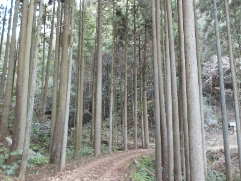
寄り道して散歩です。
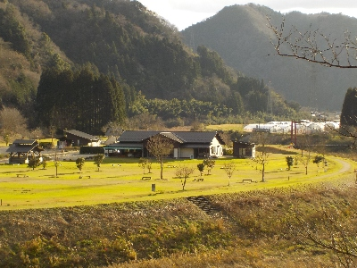
わかあゆの里の駐車場を利用しました。
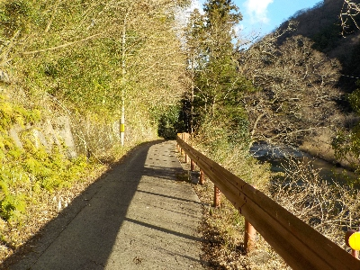
風も少なく日差しはありましたが寒かったです。1月ですから当然ですね。
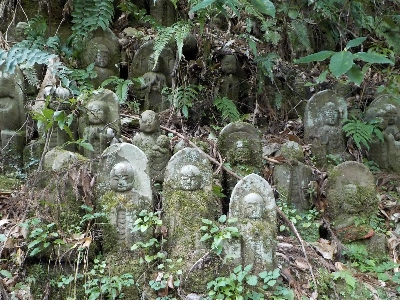
五百羅漢・千体仏です。
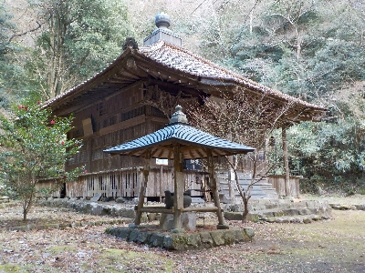
霊光寺です。立久恵薬師ともいうそうです。
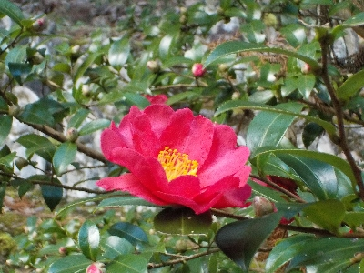
霊光寺のサザンカがキレイでした。まだ花が散ってなく、これから咲くようでした。
島根県出雲市乙立町
2025/01/03

寄り道して散歩です。

わかあゆの里の駐車場を利用しました。

風も少なく日差しはありましたが寒かったです。1月ですから当然ですね。

五百羅漢・千体仏です。

霊光寺です。立久恵薬師ともいうそうです。

霊光寺のサザンカがキレイでした。まだ花が散ってなく、これから咲くようでした。
2017/05/14
立久恵のわかあゆの里で炎の祭典（護摩供養）がありました。
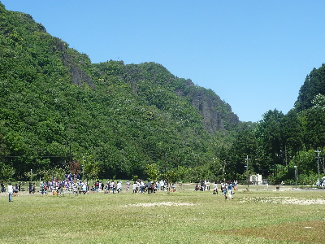
会場はこんな感じです。
広々した空間なので、地元民じゃなくて気軽に見れました。
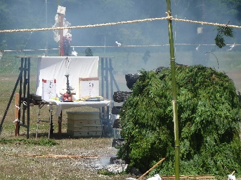
ほら貝の演奏（？）があったり、弓矢が放たれたり、お経を唱えたり、火渡りしたりと、普段見れないものが見れて良かったです。
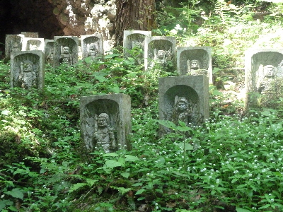
近くを散歩しました。 パワースポットって看板がありました。
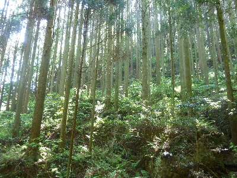
自然が多いとパワーがある気がしますね。
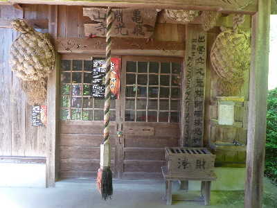
亀渕山飛光寺です。 とっても目立つ場所に炎の祭典のポスターが貼ってありました。
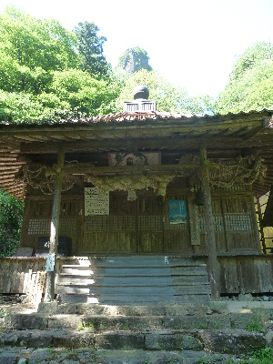
ここは立久恵山霊光寺です。 バックにある岩が大きい。
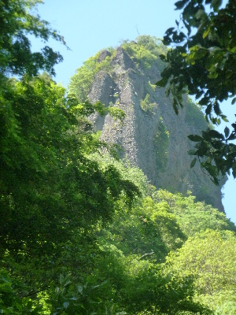
アップにするとこうなります。
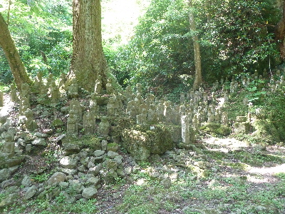
五百羅漢・千体仏です。
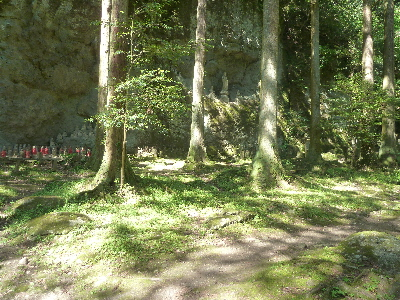
五百羅漢・千体仏の違うアングルの写真です。
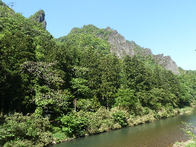
近くで色々観光出来て良かったです。